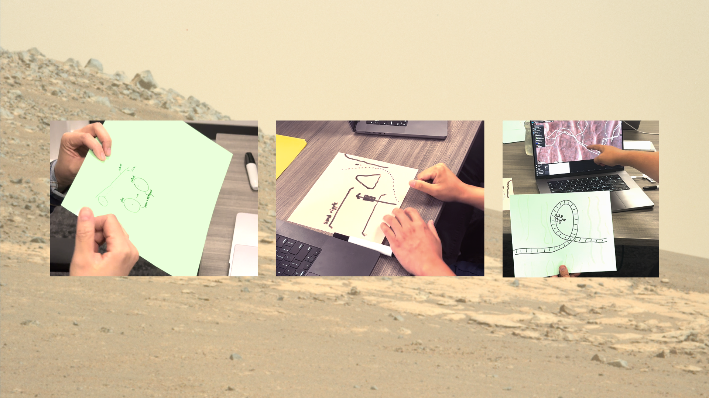
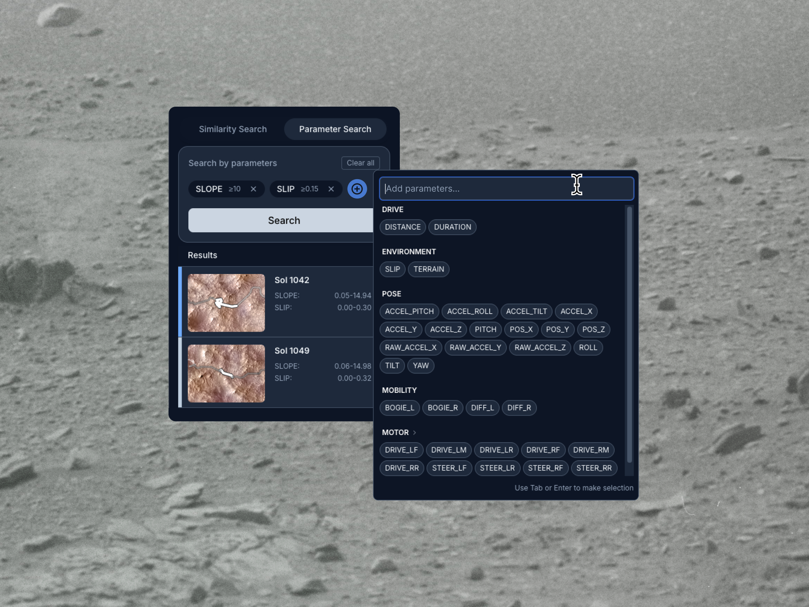
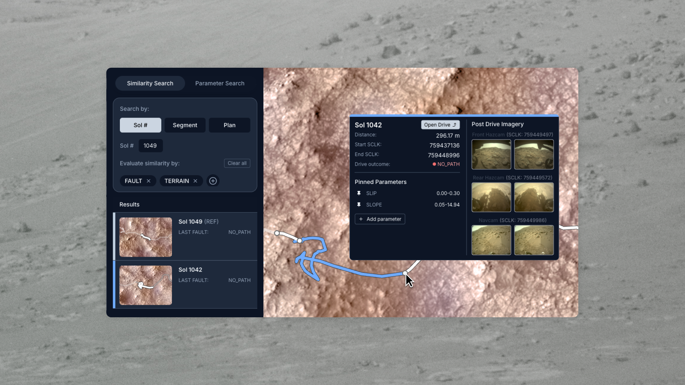
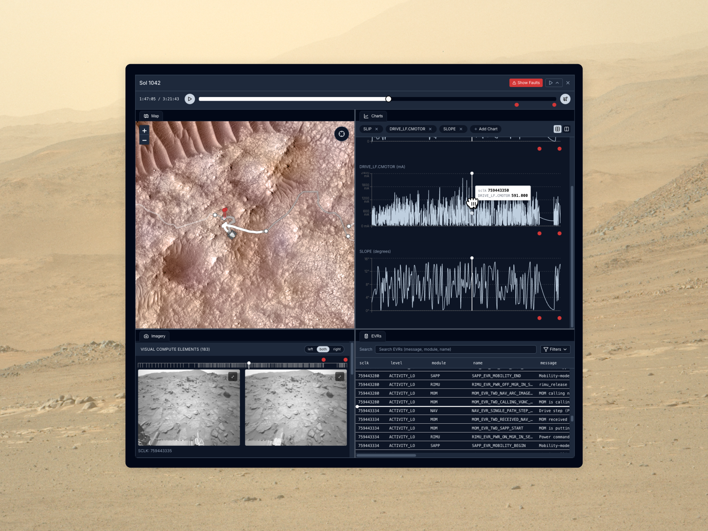

Mars 2020 Hindsight
Challenge
The Mars 2020 mission requires meticulous coordination and communication across engineering, science, and operations to ensure that various teams can conduct research on Mars safely and efficiently. In order to convey contextual information (whether environmental or rover-specific) for decision making, rover operators need to correlate snapshots of various data across several decoupled tools, a manually intensive process that is also incredibly reliant on personal memory. This results in significant cognitive burden, makes planning time-consuming, and presents a barrier during training of new personnel, given the reliance on unwritten, institutional knowledge.

Scope
End-to-end product development over the course of 10 weeks. The first 5 involved exploratory design probes, and the latter saw iterative usability testing to ensure the tool can be integrated into daily operations.
Solution
We developed Hindsight, a tool that incorporates a search engine for operators to more easily surface similar past drives from the mission, whether via discrete, human-defined conditions, or algorithmically inferred based on functional similarity to a reference drive.


To assist in engaged data analysis, we ensured that Hindsight is flexible to support side-by-side comparisons of past drives, outfitting the frontend with a playhead such that operators can scrub along the trajectory of a drive. The interface's layout is customizable to suit personal preference, showing relevant data unified in the same context and synchronized to the same timestamp.

Impact
A rover operator noted that Hindsight’s synchronized workspace enables operators to “explore the telemetry spatially, making it easier to understand how the terrain impacts the telemetry we’re observing.” Another operator estimated time savings with Hindsight: “I was able to easily pull together different telemetry of interest that I needed to assess a drive in 2–3 minutes, as compared to [the] 15–20 minutes I would have taken [...] using existing operation tools.”